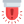

<ion-header color="uno">
  <ion-navbar color="uno">
    <ion-title>
     ACTAS
    </ion-title>
    <ion-buttons  start>
      <a href="tel:+52066" (click)="help()"></a>
   </ion-buttons>
  </ion-navbar>
</ion-header>

<ion-content padding style="background: linear-gradient(to bottom, #242323 0%, rgba(22, 22, 22, 0.5) 75%, #161616 100%);">
    <br><br> <br><br> <br><br> <br><br>
 
    
<div style="text-align: center" (click)="si()">
  <ion-card text-wrap style="text-align: center">
    <ion-item style="text-align: center">
      <ion-icon color="secondary" md="md-checkmark" ios="ios-checkmark"></ion-icon>
      <button style="background: white">
          SE ENCUENTRA EL BÚSCADO
      </button>
        </ion-item>
      </ion-card>
    </div>

<div  style="text-align: center" (click)="no()">
  <ion-card text-wrap style="text-align: center">
    <ion-item style="text-align: center">
      <ion-icon color="danger" md="md-close" ios="ios-close"></ion-icon>
      <button style="background: white">
          NO SE ENCUENTRA EL BÚSCADO
      </button>
        </ion-item>
      </ion-card>
    </div>
</ion-content>


